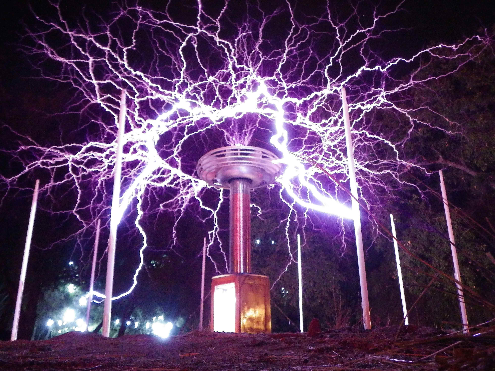
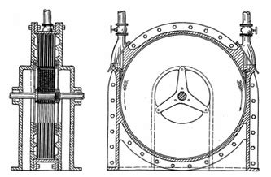
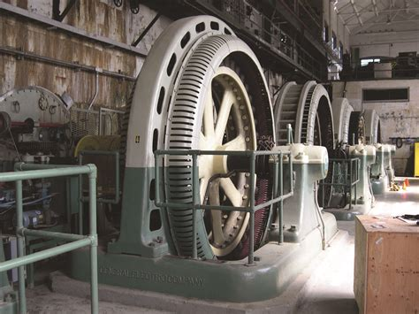
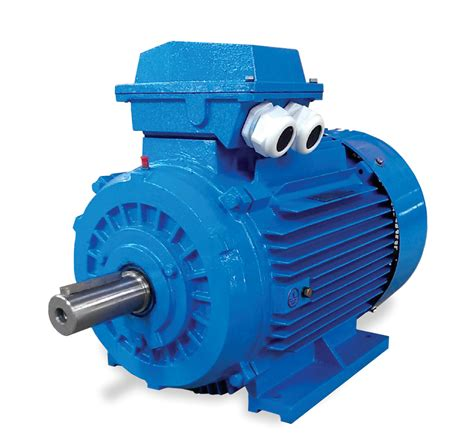

Alte inventii ale lui Tesla
- Lista inventiilor si cateva aplicatii ale lor:
-
Lampa Neon
-
Bobina Tesla
- Aplicatie in masini de sudura
- Utilizare in efecte speciale
-
Turbina Tesla
- Este folosita in uzine petroliere
-
Generatorul Hidroelectric
- Este folosit in hidrocentrale
-
Motorul pe inductie
- Este folosit in electrocasnice
- Imagini cu diversele inventii:
-
Bobina (apasati pe bobina pentru mai multe informatii)

-
Turbina (apasati sectiunea circulara a turbinei pentru mai multe informatii)

-
Generatorul

-
Motorul
